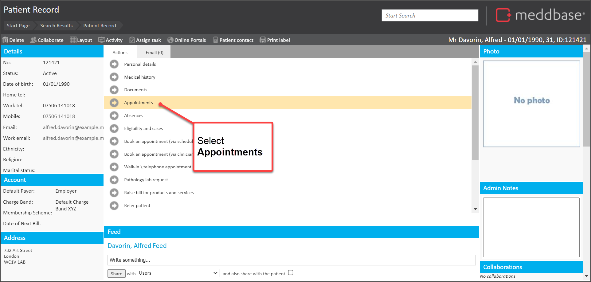
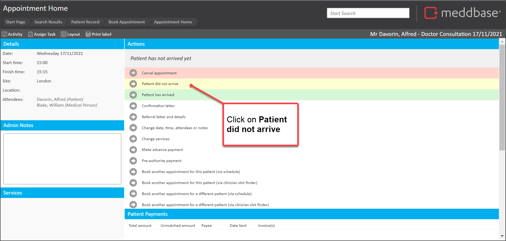
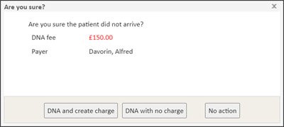
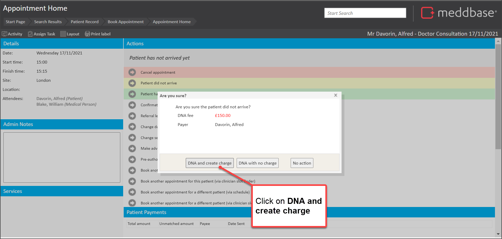
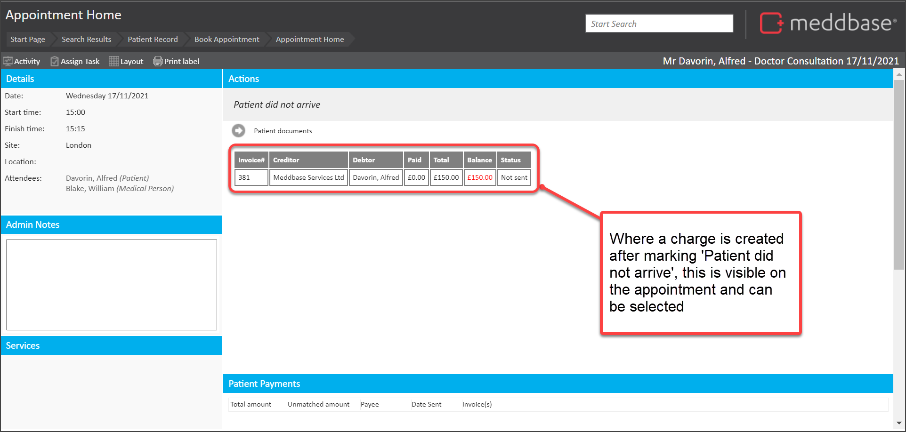
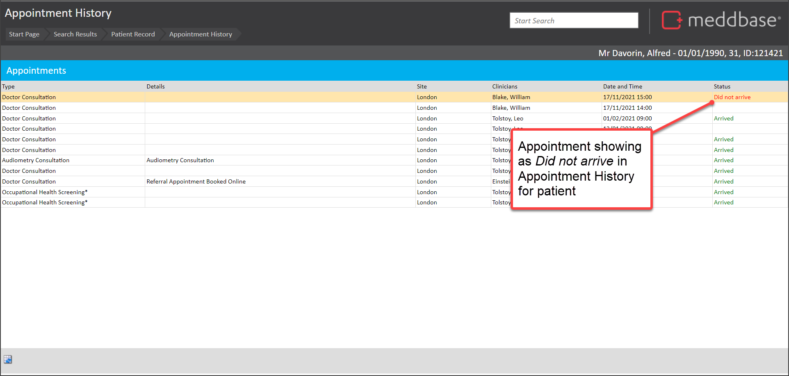
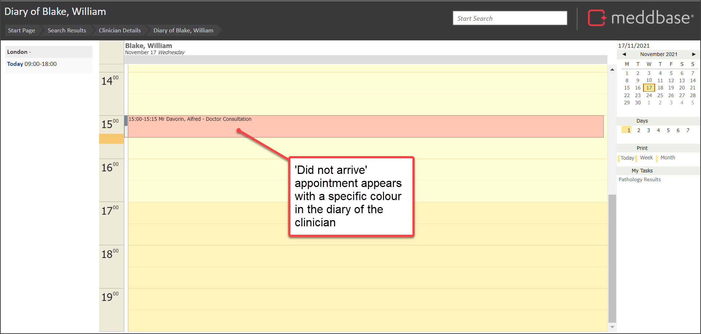

If a patient does not arrive for an appointment (i.e. was a 'DNA'), you may want to record the event and have the opportunity to apply pre-configured charges for non-attendance.
This article outlines:
It's important to note that:
To record that a patient did not arrive for an appointment:
1. Navigate to the appointment

2. Select the appointment to be marked as 'Did not arrive'
3. In the Appointment Home page, click the Patient did not arrive option within the Actions pane

You are presented with an Are you sure? pop-up dialog.

This enables you to take different actions. These screen features and options are explained in the table below.
| Option / Feature | Explanation |
| DNA fee | The fee that can potentially be charged to this appointment as a result of non-attendance. This amount is dependent on the setup of the Cancellation Charge Rule. |
| Payer | The person or organisation who will be the debtor for any DNA fee created. |
| DNA and create charge | By selecting this option, you record that the patient did not arrive and create a charge as per the DNA fee shown in red. |
| DNA with no charge | By selecting this option, you record that the patient did not arrive but do not create a charge. |
| No action | By selecting this option you do not record that the patient did not arrive. The options to cancel, arrive or equally record a DNA will still consequently be available. |
In this example, we are going to 'DNA' the appointment and create a charge.
4. Select the DNA and create charge button at the bottom of the pop-up dialog

The process of recording that the patient did not arrive is complete.
There are a few effects that are noted below:



As well as marking that a patient 'Did Not Arrive', you may be interested in the following articles